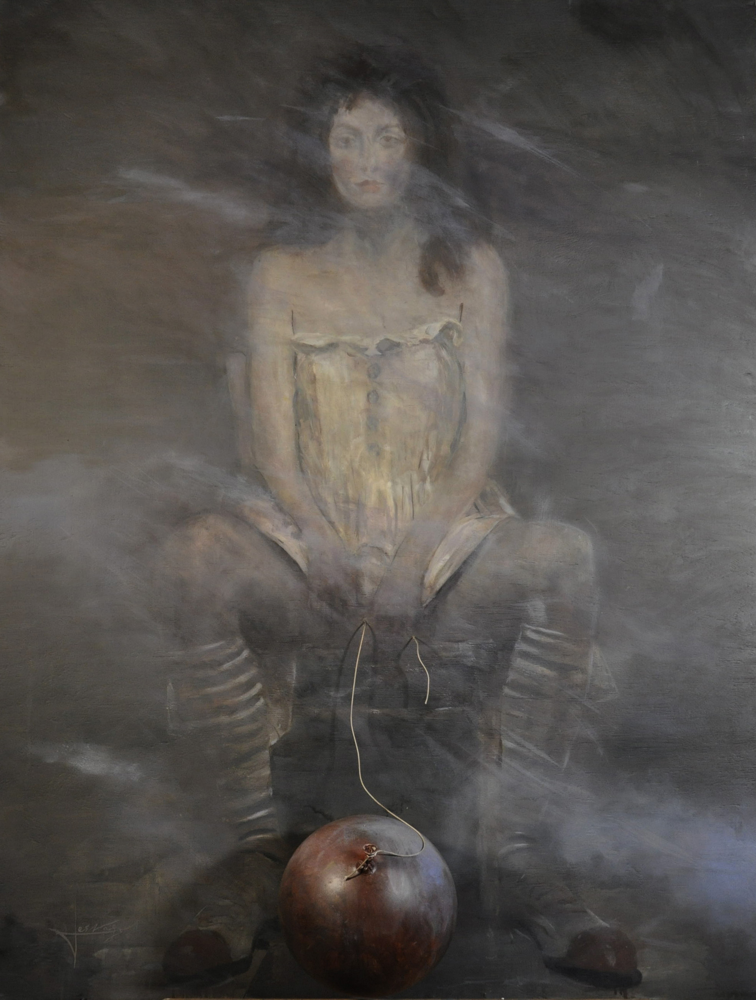
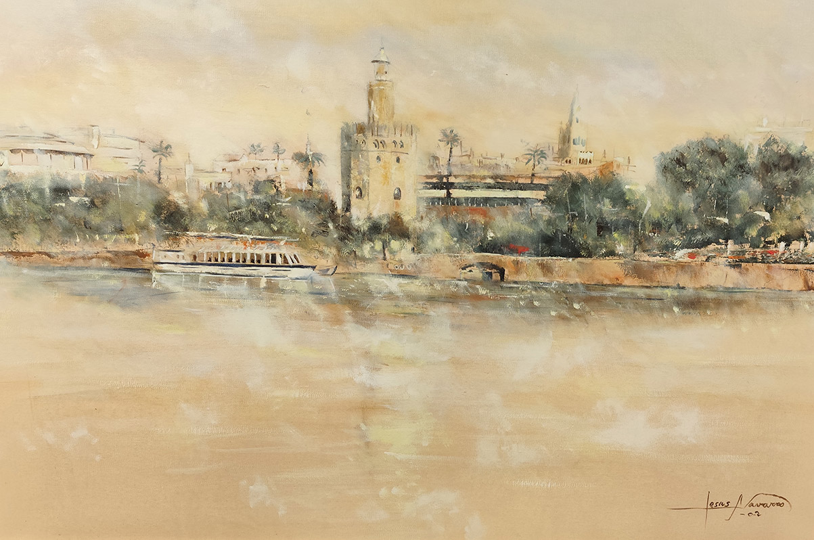
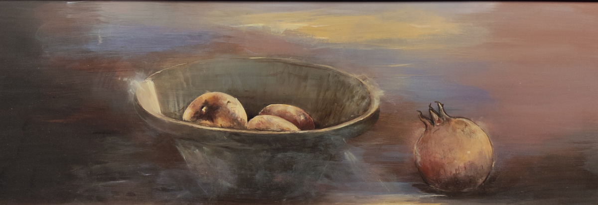
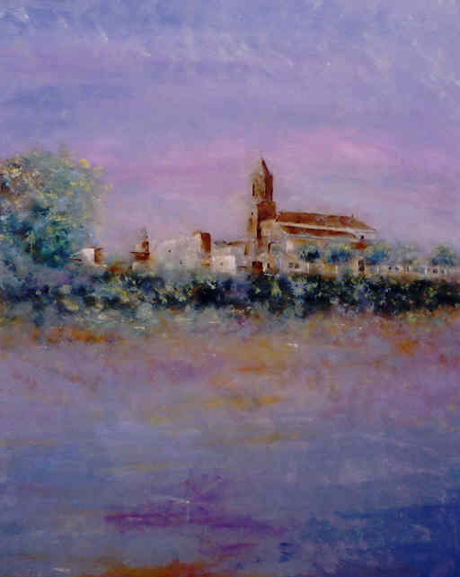
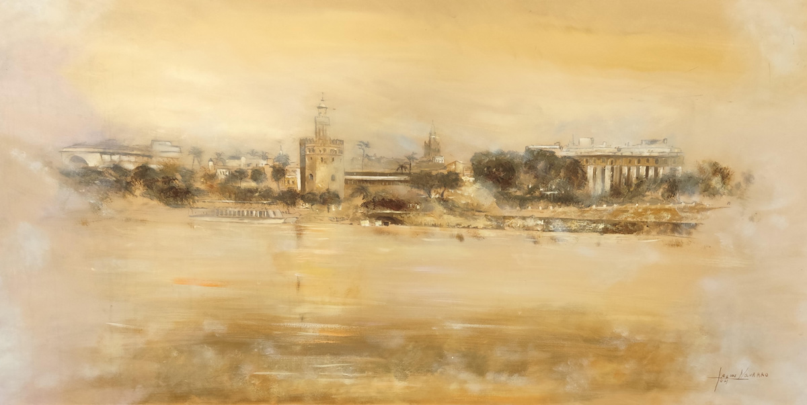
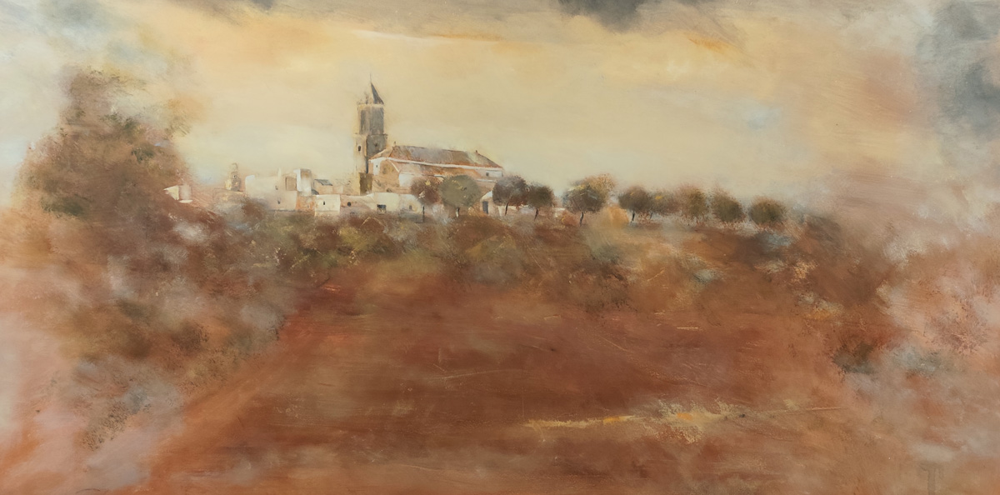
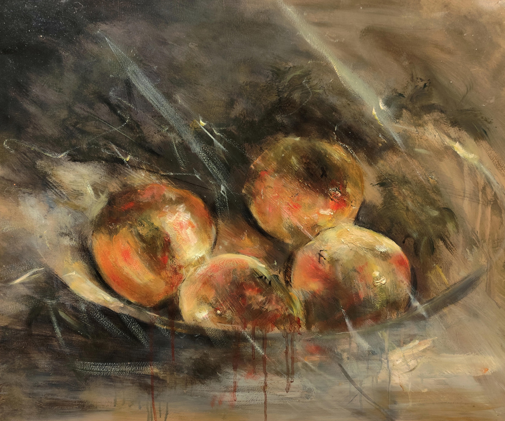
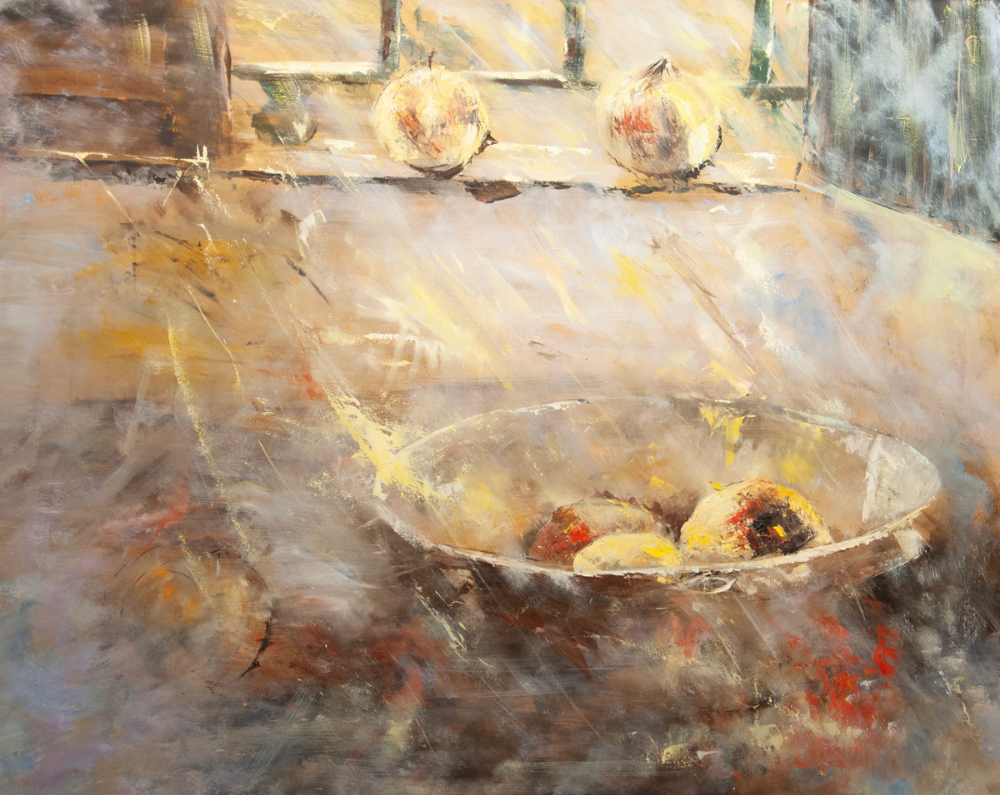
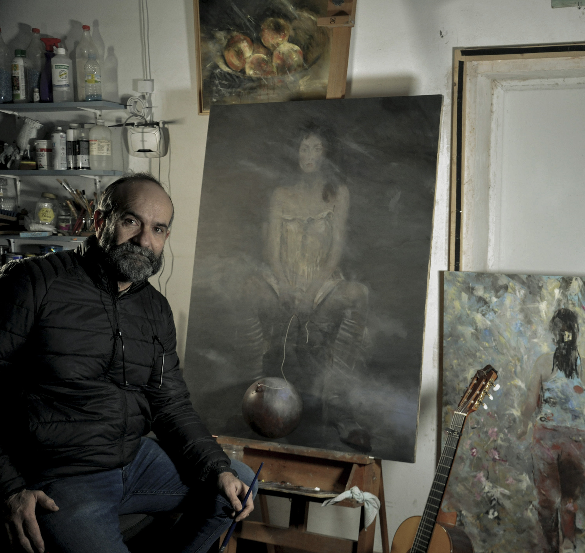

Arte que Transforma Emociones
Art That Transforms Emotions
Pintura andaluza auténtica: Luz del Sur, Materia y Simbolismo.
Authentic Spanish Art ideal for Mediterranean, Rustic & Hacienda Style interiors.
Explorar Obras Contactar al ArtistaEl Silencio que Habla
The Silence That Speaks
Un instante de mi diálogo con la materia, la luz y el alma.
A moment of my dialogue with matter, light, and soul.
Obras Destacadas
Featured Works
Mi obra se centra en la Figuración Expresiva Contemporánea, donde la realidad se transforma a través de la emoción, la luz y la textura.
My work centers on Contemporary Expressive Figuration, where reality is transformed through emotion, light, and texture.

La chica del globo
Técnica mixta con intervención escultórica • 2025
Mixed media with sculptural intervention • 2025
Estilo: Figuración Expresiva Contemporánea
Style: Contemporary Expressive Figuration
80,5 x 100,5 cm
Obra única (One of a kind). Incluye Certificado de Autenticidad firmado por el artista.
One of a kind. Includes signed Certificate of Authenticity.
Solicitar ficha técnica y disponibilidad Request technical sheet and availability
Sevilla desde el Río
Paisaje • Óleo sobre lienzo • 2002
Landscape • Oil on canvas • 2002
Estilo: Figuración Expresiva Contemporánea
Style: Contemporary Expressive Figuration
84 x 54 cm
Solicitar ficha técnica y disponibilidad Request technical sheet and availability
Granadas
Bodegón • Óleo sobre madera • 2004
Still life • Oil on wood • 2004
Estilo: Figuración Expresiva Contemporánea
Style: Contemporary Expressive Figuration
62 x 23 cm
Solicitar ficha técnica y disponibilidad Request technical sheet and availability
Vista de Cantillana
Paisaje • Óleo sobre madera • 2003
Landscape • Oil on wood • 2003
Estilo: Figuración Expresiva Contemporánea
Style: Contemporary Expressive Figuration
102 x 80 cm
Obra en colección privada
In private collection

Sevilla desde el Río
Paisaje • Óleo sobre lienzo • 2003
Landscape • Oil on canvas • 2003
Estilo: Figuración Expresiva Contemporánea
Style: Contemporary Expressive Figuration
100 x 50 cm
Solicitar ficha técnica y disponibilidad Request technical sheet and availability
Vista de Cantillana
Paisaje • Óleo sobre madera • 2010
Landscape • Oil on wood • 2010
Estilo: Figuración Expresiva Contemporánea
Style: Contemporary Expressive Figuration
100 x 50 cm
Solicitar ficha técnica y disponibilidad Request technical sheet and availability
Granadas
Bodegón • Óleo sobre madera • 2015
Still life • Oil on wood • 2015
Estilo: Figuración Expresiva Contemporánea
Style: Contemporary Expressive Figuration
61 x 50 cm
Solicitar ficha técnica y disponibilidad Request technical sheet and availability
Granadas en Ventana
Bodegón • Óleo sobre madera • 2016
Still life • Oil on wood • 2016
Estilo: Figuración Expresiva Contemporánea
Style: Contemporary Expressive Figuration
100 x 81 cm
Obra disponible internacionalmente en Saatchi Art.
Internationally available through Saatchi Art.
Solicitar ficha técnica y disponibilidad Request technical sheet and availabilityAdquiere obra original
Purchase original artwork
Mis obras están disponibles en plataformas internacionales seleccionadas por su rigor, calidad y alcance global.
My works are available on curated international platforms known for their quality, professionalism, and global reach.
“Granadas en Ventana” – Óleo sobre madera, 100 x 81 cm, 2016
“Pomegranates at the Window” – Oil on wood, 100 x 81 cm, 2016
Todas las obras incluyen certificado de autenticidad firmado por el artista. All artworks include a signed Certificate of Authenticity.
Trayectoria y Presencia en Plataformas Profesionales
Career & Presence on Professional Platforms
Desde el año 2000, mi obra ha sido seleccionada y adquirida por coleccionistas privados en prestigiosos certámenes nacionales. Mi presencia en El Pórtico, una de las primeras galerías digitales de arte en España, documenta esta etapa fundamental de mi carrera, donde obras como “Sevilla desde el Río” encontraron su primer hogar.
Since 2000, my work has been selected and acquired by private collectors through prestigious national art competitions. My presence on El Pórtico, one of Spain's pioneering digital art galleries, documents this foundational stage of my career, where works like “Sevilla desde el Río” found their first home.

Jesús Navarro en El Pórtico
Jesús Navarro on El Pórtico
Artista registrado desde principios de los años 2000
Artist registered since the early 2000s

Sevilla desde el Río
54 x 81 cm • Óleo sobre lienzo
Seville from the River
54 x 81 cm • Oil on canvas

65 x 64 cm • Oil on canvas

100 x 50 cm • Oil on wood

102 x 80 cm • Oil on wood
Estas obras, documentadas en una de las plataformas pioneras del arte digital en España, forman parte de mi evolución artística y reflejan el inicio de mi compromiso con la pintura emocional y simbólica.
These works, documented on one of Spain’s earliest digital art platforms, are part of my artistic evolution and reflect the beginning of my commitment to emotional and symbolic painting.
Certificado de Autenticidad
Certificate of Authenticity
Todas las obras originales de Jesnagar se entregan con un certificado de autenticidad firmado por el artista, que incluye:
All original works by Jesnagar come with a signed Certificate of Authenticity, which includes:
- Nombre de la obra, año, técnica y dimensiones
- Title, year, technique, and dimensions
- Firma y sello del artista
- Artist’s signature and seal
- Número de registro único
- Unique registration number
- Recomendaciones de conservación
- Conservation recommendations
Este documento garantiza la procedencia, unicidad y valor artístico de la obra, y es esencial para su inclusión en colecciones privadas o institucionales.
This document guarantees the provenance, uniqueness, and artistic value of the work, and is essential for inclusion in private or institutional collections.
Sobre Jesnagar
About Jesnagar

Pintor autodidacta con una sólida trayectoria y profundo arraigo en el arte, cuya pasión se forjó desde la infancia junto a su madre, una talentosa dibujante que cultivó en él el amor por el dibujo y la pintura.
A self-taught painter with a strong artistic trajectory and deep roots in art, whose passion was forged in childhood alongside his mother, a talented amateur draftsman who nurtured his love for drawing and painting.
Su formación se consolidó con la tutela del reconocido pintor local en Cantillana. Desde temprana edad, dominó los fundamentos del claroscuro, la luz y el dibujo del natural, demostrando un talento precoz que continuó puliendo en la Academia ArteAula y el Taller de Talla en Madera de la Diputación de Sevilla.
His training was consolidated under the guidance of a renowned local painter in Cantillana. From an early age, he mastered the fundamentals of chiaroscuro, light, and life drawing, demonstrating precocious talent that he later refined at ArteAula Academy and the Wood Carving Workshop of the Seville Provincial Council.
La obra de Jesnagar se distingue por una figuración expresiva contemporánea que fusiona la observación realista con una intensa exploración cromática, textural y simbólica. Ha sido seleccionada y vendida en prestigiosos concursos y exposiciones colectivas a nivel nacional. Su talento captó el interés de importantes galerías de arte en Valencia y Castellón en etapas previas de su carrera.
Jesnagar’s work is distinguished by a contemporary expressive figuration that blends realistic observation with intense chromatic, textural, and symbolic exploration. His pieces have been selected and sold in prestigious national competitions and group exhibitions. His talent attracted the attention of major art galleries in Valencia and Castellón during earlier stages of his career.
Actualmente, el artista vive un momento de renovada fuerza y vigor creativo, dedicándose plenamente a la expansión de su producción artística. Su enfoque se centra en la representación emocional de la figura humana, paisajes andaluces y bodegones simbólicos —como las granadas—, dotándolos de profundidad narrativa y resonancia poética.
Currently, the artist is experiencing a period of renewed creative strength and vigor, fully devoted to expanding his artistic production. His focus centers on the emotional representation of the human figure, Andalusian landscapes, and symbolic still lifes —such as pomegranates— endowing them with narrative depth and poetic resonance.
Filosofía Artística
Artistic Philosophy
"Para mí, el arte es un diálogo silencioso entre el creador y el espectador, un puente entre lo visible y lo invisible, entre lo tangible y lo emocional. Cada obra es una invitación a sentir y a conectar con lo más profundo del ser."
"For me, art is a silent dialogue between creator and viewer—a bridge between the visible and the invisible, the tangible and the emotional. Each work is an invitation to feel and connect with the deepest part of being."
Formación Artística
Artistic Training
- Taller de Talla en Madera:Wood Carving Workshop: Diputación de Sevilla, Cantillana (2000)
- Perfeccionamiento en Retrato:Portrait Enhancement: Academia ArteAula, Sevilla (2000-2001)
- Fundamentos del Dibujo y la Pintura:Drawing & Painting Fundamentals: Clases particulares con pintor local, Cantillana (desde los 10 años)
- Artista Autodidacta:Self-Taught Artist: Desarrollo continuo desde la infancia.
Habilidades Artísticas
Artistic Skills
- Medios y Técnicas Pictóricas:Painting Media & Techniques: Óleo sobre madera y lienzo, acrílico, esmalte, dibujo (carboncillo, retrato, bodegón), técnica mixta.
- Técnicas Históricas y Artesanales:Historical & Artisanal Techniques: Policromía tradicional, temple de huevo, pintura al fresco, dorado en pan de oro.
- Escultura y Modelado:Sculpture & Modeling: Modelado en barro y escayola, elaboración de moldes, técnicas de vaciado, talla en madera.
- Estilos:Styles: Figuración expresiva contemporánea, retrato simbólico, abstracción emocional, pintura con raíces clásicas.
- Temáticas:Themes: Paisaje, figura humana, retratos emocionales, escenas cotidianas, urbanismo, simbolismo, bodegones.
Contacta con Jesnagar
Contact Jesnagar
contacto@jesnagar.com
+34 613 03 94 83
Calle Dehesa nº 8 | Villaverde del Río, Sevilla, España
Galería Virtual 3D
3D Virtual Gallery
Sumérgete en una experiencia inmersiva donde mis pinturas cobran vida en un espacio tridimensional. Explora mi obra desde una perspectiva única y emocional.
Immerse yourself in an immersive experience where my paintings come to life in a three-dimensional space. Explore my work from a unique and emotional perspective.
Visitar Galería 3D Visit 3D Gallery